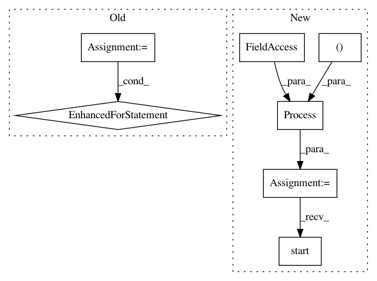

67fa4171fffad014ef7f072ef56426e52080fcb5,src/fetch_suspicious_places.py,,search_suspicious_around_companies,#Any#,141
Before Change
total = len(rows)
count = 0
with Pool(processes=4) as pool:
for company in pool.imap(search_suspicious_around_company, rows):
count += 1
print_status(total, count)
if company:
write_csv(company)
def search_suspicious_around_company(company):
:param company: (dict)
:return: suspect
After Change
q.put(csv_line(search_suspicious_around_company(company)))
write_queue = Queue()
place_search = Process(target=make_queue, args=(write_queue, companies))
place_search.start()
with lzma.open(OUTPUT, "at") as output:
while place_search.is_alive() or not write_queue.empty():
try:
In pattern: SUPERPATTERN
Frequency: 3
Non-data size: 7
Instances
Project Name: okfn-brasil/serenata-de-amor
Commit Name: 67fa4171fffad014ef7f072ef56426e52080fcb5
Time: 2016-11-10
Author: cuducos@gmail.com
File Name: src/fetch_suspicious_places.py
Class Name:
Method Name: search_suspicious_around_companies
Project Name: MaybeShewill-CV/CRNN_Tensorflow
Commit Name: ed66679b71989f55cc25d7adf69e386ad27c2063
Time: 2019-03-22
Author: luoyao@baidu.com
File Name: data_provider/tf_io_pipline_fast_tools.py
Class Name: CrnnFeatureWriter
Method Name: run
Project Name: automl/auto-sklearn
Commit Name: 8442321b9b7a7cef7e3806b525965c36cea1549e
Time: 2020-09-25
Author: feurerm@informatik.uni-freiburg.de
File Name: examples/60_search/example_parallel_manual_spawning.py
Class Name:
Method Name: